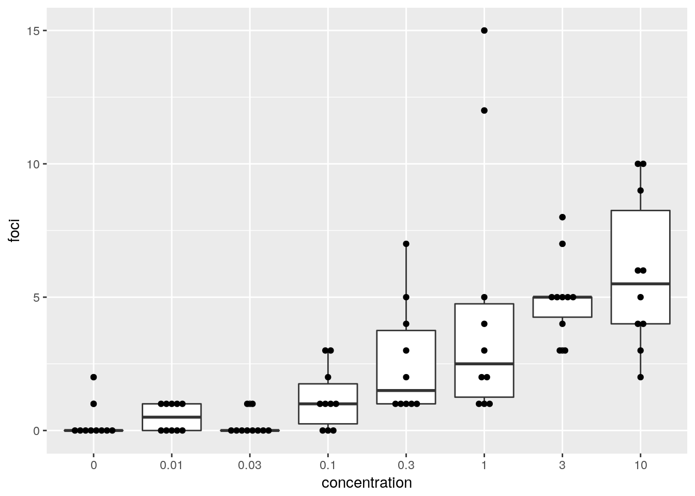
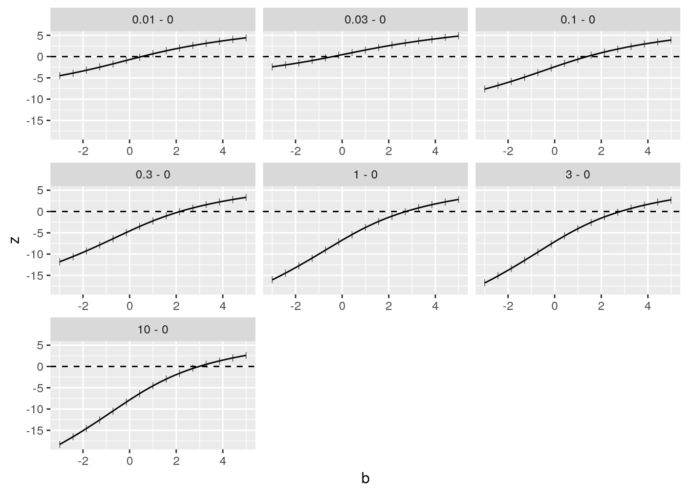

The package mcprofile contains functions for simultaneous inference based on a set of profile statistics, controlling the family-wise error rate (FWER) at a specified level. Focus is set on testing general linear hypotheses in generalized linear models and provide a set of compatible simultaneous confidence intervals. The multiple testing framework of Hothorn et al. (2008) is adopted to signed likelihood root and modified likelihood root statistics to improve the performance especially at small sample sizes.
A vector of \(i=1,\dots,n\) observations \(y_{i}\) is assumed to be a realization of a random variable \(Y_{i}\), where each component of \(Y_{i}\) is assumed to have a distribution in the exponential family. The systematic component of the assumed generalized linear model is \[ g(\mu_{i}) = \eta_{i} = \sum_{j=1}^{p} x_{ij} \beta_{j} \] with a link function \(g(\cdot)\), a \(p\)-dimensional vector of parameters \(\beta_{j}\), and a \((n \times p)\) matrix with design covariates \(x_{ij}\). Thus, the log-likelihood can be written as \(l(\mu_{i}; y_{i}) = \sum_{i=1}^{n} \log f_{i}(y_{i}; \mu_{i})\). Instead of the likelihood function, the scaled deviance \[ D(y_{i}; \mu_{i}) = 2l(y_{i}; y_{i}) - 2l(\mu_{i}; y_{i}) \] can be used as a goodness-of-fit criterion. To estimate a coefficient vector \(\hat{\beta}_{j}\) an iteratively re-weighted least squares algorithm is applied for finding the minimum of the deviance function. A more detailed introduction can be found in McCullagh and Nelder (1989).
In many applications the experimental questions are specified through \(k=1,\dots,q\) linear combinations of the model parameters, \(\vartheta_{k} = \sum_{j=1}^{p} a_{kj}\beta_{j}\), which are defined by a \((q \times p)\) coefficient matrix \(a_{kj}\). When constructing simultaneous confidence intervals or hypotheses tests, the multiple comparison problem of testing all hypotheses at a nominal level of \(\alpha\), the overall type I error rate, has to be considered. A unifying simultaneous inference framework for these parameter linear combinations in general parametric models is presented in Hothorn et al. (2008). They consider the general linear hypotheses: \[ H_{0}: \quad \sum_{j=1}^{p} a_{kj}\beta_{j} = m_{k} \] where \(m_{k}\) is a vector, of order \(q\), of specified constants.
The key factor of this single-step inference is the assumption of a multivariate normal-distribution of the standardized estimator \(\hat{\vartheta}_{k}\) with a correlation structure, which is directly obtained from the \((p \times p)\) observed information matrix at the parameter estimates \(j(\beta)=-\frac{\partial^{2}l(\mu_{i}; y_{i})}{\partial \beta \partial \beta^{T}}\).
Several test statistics can be used to test the set of general linear hypotheses [Brazzale and Davison, 2008].
\[ w(\vartheta_{k}) = \left( \hat{\vartheta}_{k} - \vartheta_{k} \right) j^{\frac{1}{2}}(\hat{\vartheta}_{k}), \]
where \(j^{-1}(\hat{\vartheta}) = Aj^{-1}(\hat{\beta})A^{T}\) is the observed information matrix of the contrast parameters, with \(A\) being the \((q \times p)\) coefficient matrix with elements \(a_{kj}\). As \(\hat{\vartheta}_{k}\) and the observed information are fixed at the maximum likelihood estimates, \(w(\vartheta_{k})\) is a linear function with increasing \(\vartheta_{k}\), and therefore approximates the deviance by a quadratic function \(w(\vartheta_{k})^2\), which holds exactly for a Gaussian linear model.
\[ q(\vartheta_{k}) = sign \left( \hat{\vartheta}_{k} - \vartheta_{k} \right) \sqrt{\frac{D(y_{i}; \hat{\mu}_{i}) - D(y_{i}; \tilde{\mu}_{i})}{\phi}} \]
\(\hat{\mu}_{i}\) is the linear predictor at the maximum likelihood estimates \(\hat{\beta}_{j}\). \(\tilde{\mu}_{i}\) denotes the linear predictor obtained for restricted parameter estimates \(\tilde{\beta}_{j}\), obtained under the \(k\)th linear constraint \(\sum_{j=1}^{p} a_{kj}\beta_{j} = \vartheta_{k}\). \(\phi\) is a dispersion parameter, which accounts for extra variation in the data. This parameter is fixed at 1 e.g. for a Binomial or Poisson model, but can also be estimated from the data, like the residual error in a Gaussian linear model.
To obtain \(\tilde{\mu}_{i}\), the weighted least squares step in the IRWLS algorithm can be modified by using a weighted regression of \(z\) on the design covariates \(x_{1},\dots,x_{p}\) with weight \(W\), which allows to apply linear equality constraints on the regression parameters at each iteration. A quadratic programming algorithm, mcprofile uses function solve.QP() in package quadprog, can be used to obtain the restricted parameter estimates.
\[ r(\vartheta_{k}) = q(\vartheta_{k}) + \frac{1}{q(\vartheta_{k})} \log \left( \frac{w(\vartheta_{k})\rho(\vartheta_{k}, \hat{\vartheta}_{k})}{q(\vartheta_{k})} \right), \]
with \(\rho(\vartheta_{k}, \hat{\vartheta}_{k}) = \sqrt{\frac{|j_{\lambda \lambda}(\hat{\beta}_{j})|}{|j_{\lambda \lambda}(\tilde{\beta}_{j})|}}\). \(|j_{\lambda\lambda}(\cdot)|\) denotes the determinant of a subset of the observed information matrix to summarize the information about the nuisance parameters that are not subject to the linear constraint. The observed information is evaluated at the maximum likelihood estimates \(\hat{\beta}_{j}\) and the restricted estimates \(\tilde{\beta}_{j}\) under the linear constraint \(\sum_{j=1}^{p} a_{kj}\beta_{j} = \vartheta_{k}\).
A Wald-type confidence interval is defined as \[ I = \left\{ \vartheta_{k}: -c_{1-\alpha} \leq w(\vartheta_{k}) \leq c_{1-\alpha} \right\} \]
with a critical value \(c_{1-\alpha}\). Analogously, \(w(\vartheta_{k})\) can be substituted by the different profile statistics \(q(\vartheta_{k})\) and \(r(\vartheta_{k})\). As the confidence limits are found separately for each of the \(q\) linear combinations of parameters, the combined set of confidence limits describes a rectangular confidence set in a \(q\)-dimensional space.
The critical value should be chosen in a way that the FWER is controlled, considering the correlation between the derived parameters. The statistics are assumed to follow a \(q\)-variate normal or \(t\)-distribution. The correlation structure for this distribution is obtained by standardizing the variance-covariance matrix of the contrast parameters, \[ \Phi(\hat{\vartheta}) = \Delta(\hat{\vartheta}_{k}) j^{-1}(\hat{\vartheta}) \Delta(\hat{\vartheta}_{k}), \qquad \Delta(\hat{\vartheta}_{k}) = j^{\frac{1}{2}}(\hat{\vartheta}_{k})I_{q}, \] using the estimates from the data and treat them as if it were the true correlation matrix. In order to assign the same weight or error level to each of the \(q\) hypotheses an equicoordinate quantile \(c_{1-\alpha}\) is calculated from this \(q\)-dimensional distribution. The package mvtnorm is used to compute the quantile.
For an effective search for the confidence limits, a grid of values for each of the \(\theta_{k}\) around the maximum likelihood estimates is established, interpolating the resulting \(q(\vartheta_{k})\) or \(r(\vartheta_{k})\) by a cubic spline function. The confidence limits are found by evaluating the inverse of this interpolating function at \(-c_{1-\alpha}\) and \(c_{1-\alpha}\).
Instead of simultaneous confidence intervals, the analogue testing procedure of the set of null hypotheses \(H_{0}: \; \vartheta_{k}=m_{k}\) is available. To maintain the FWER, the global null hypothesis is rejected, if at least one elementary hypothesis is rejected; thus, focus is set on the maximum of test statistics. The distribution of this maximum evaluated at the specific test margins \(m_{k}\) can be specified for a two-sided testing procedure as \[ P(\max \left| w(m_{k}) \right| \leq t) = g(\Phi(\hat{\vartheta}), t) \] for any \(t \in \mathbb{R}\). Adjusted p-values controlling the FWER are calculated as \[ p_{k} = 1-g(\Phi(\hat{\vartheta}), \left| t_{k} \right|) \] where \(t_{k}\) is the observed statistic, either using \(w(\cdot)\), \(q(\cdot)\), or \(r(\cdot)\).
The mcprofile function needs at least two components, an object of class glm and a contrast matrix to define several linear combinations of glm coefficients.
As an application example the cta dataset is used, where Balb/c 3T3 cells are treated with different concentrations of a carcinogen to test for toxicity. Cells treated with a carcinogen do not stop proliferation, hence the number of foci (cell accumulations) are used as a measure of toxicity. The number of foci is counted for 10 indipendent replicates per concentration level.
data(cta)
str(cta)## 'data.frame': 80 obs. of 2 variables:
## $ conc: num 0 0 0 0 0 0 0 0 0 0 ...
## $ foci: int 0 1 0 0 0 0 0 0 0 2 ...cta$concf <- factor(cta$conc, levels=unique(cta$conc))
ggplot(cta, aes(y=foci, x=concf)) +
geom_boxplot() +
geom_dotplot(binaxis = "y", stackdir = "center", binwidth = 0.2) +
xlab("concentration")
In a first analysis, the distance between dose levels is not taken into account, comparing the expectated values for each dose levels with the one of the control. A generalized linear model is fitted to the data, assuming that the number of foci is following a Poisson distribution.
\[ y_{i} \sim Poisson(\mu_{i}), \qquad \log(\mu_{i}) = \eta_{i}, \qquad \eta_{i} = \beta_{0} + \sum_{j=1}^{7} x_{ij}\beta_{j} \]
The dummy covariates \(x_{ij}\) are chosen in a way, that the \(\beta_{j}\) represent differences of each dose levels to the intercept \(\beta_{0}\).
(m1 <- glm(foci ~ concf, data=cta, family=poisson(link="log")))##
## Call: glm(formula = foci ~ concf, family = poisson(link = "log"), data = cta)
##
## Coefficients:
## (Intercept) concf0.01 concf0.03 concf0.1 concf0.3
## -1.2040 0.5108 -0.4055 1.3863 2.1595
## concf1 concf3 concf10
## 2.7300 2.8134 2.9789
##
## Degrees of Freedom: 79 Total (i.e. Null); 72 Residual
## Null Deviance: 272.2
## Residual Deviance: 106 AIC: 282.9# confidence intervals for beta_j
confint(m1, parm=2:8)## 2.5 % 97.5 %
## concf0.01 -0.8941688 2.095110
## concf0.03 -2.4325964 1.392205
## concf0.1 0.2396109 2.865485
## concf0.3 1.1159257 3.593120
## concf1 1.7257778 4.145704
## concf3 1.8132747 4.227184
## concf10 1.9860194 4.389347The same confidence intervals can be reproduced with mcprofile, but using linear contrasts instead of the parms argument. With the contrast matrix a linear combination of model coefficients is defined in each row; hence in each row the coefficient of 1 refers to the position of the \(\beta_{j}\) in the coefficient vector of the glm object. Names are passed down from the rownmaes of the contrast matrix.
Based on the profiles of the likelihood root, confidence intervals are calculated with the argument adjust=“none” to control the per comparison error rate with a separate type-I-error for each comparison.
cm1 <- cbind(0, diag(7))
rownames(cm1) <- paste(levels(cta$concf)[-1], levels(cta$concf)[1], sep=" - ")
print(cm1)## [,1] [,2] [,3] [,4] [,5] [,6] [,7] [,8]
## 0.01 - 0 0 1 0 0 0 0 0 0
## 0.03 - 0 0 0 1 0 0 0 0 0
## 0.1 - 0 0 0 0 1 0 0 0 0
## 0.3 - 0 0 0 0 0 1 0 0 0
## 1 - 0 0 0 0 0 0 1 0 0
## 3 - 0 0 0 0 0 0 0 1 0
## 10 - 0 0 0 0 0 0 0 0 1p1 <- mcprofile(m1, cm1)
confint(p1, adjust="none")##
## mcprofile - Confidence Intervals
##
## level: 0.95
## adjustment: none
##
## Estimate lower upper
## 0.01 - 0 0.511 -0.894 2.09
## 0.03 - 0 -0.405 -2.432 1.39
## 0.1 - 0 1.386 0.240 2.87
## 0.3 - 0 2.159 1.116 3.59
## 1 - 0 2.730 1.726 4.15
## 3 - 0 2.813 1.813 4.23
## 10 - 0 2.979 1.986 4.39Instead of directly estimating the difference to the control, the coefficient vector can be reparameterized to represent the (log-) expected values for each concentration level by omitting the intercept in the model.
(m2 <- glm(foci ~ concf-1, data=cta, family=poisson(link="log")))##
## Call: glm(formula = foci ~ concf - 1, family = poisson(link = "log"),
## data = cta)
##
## Coefficients:
## concf0 concf0.01 concf0.03 concf0.1 concf0.3 concf1
## -1.2040 -0.6931 -1.6094 0.1823 0.9555 1.5261
## concf3 concf10
## 1.6094 1.7750
##
## Degrees of Freedom: 80 Total (i.e. Null); 72 Residual
## Null Deviance: 404.3
## Residual Deviance: 106 AIC: 282.9# m1 and m2 are the same models with different parameterization
all.equal(deviance(m1), deviance(m2))## [1] TRUEThe definition of a contrast matrix in mcprofile allows also to compute the same confidence intervals for the difference of concentration levels to the control, similar to the confidence intervals of the first modeling approach. The functionality of the package multcomp with the contrMat function can be used to use several pre-defined structures for the contrast matrix.
library(multcomp)
(cm2 <- contrMat(table(cta$concf), type="Dunnett"))##
## Multiple Comparisons of Means: Dunnett Contrasts
##
## 0 0.01 0.03 0.1 0.3 1 3 10
## 0.01 - 0 -1 1 0 0 0 0 0 0
## 0.03 - 0 -1 0 1 0 0 0 0 0
## 0.1 - 0 -1 0 0 1 0 0 0 0
## 0.3 - 0 -1 0 0 0 1 0 0 0
## 1 - 0 -1 0 0 0 0 1 0 0
## 3 - 0 -1 0 0 0 0 0 1 0
## 10 - 0 -1 0 0 0 0 0 0 1p2 <- mcprofile(m2, cm2)
(ci <- confint(p2, adjust="none"))##
## mcprofile - Confidence Intervals
##
## level: 0.95
## adjustment: none
##
## Estimate lower upper
## 0.01 - 0 0.511 -0.894 2.09
## 0.03 - 0 -0.405 -2.432 1.39
## 0.1 - 0 1.386 0.240 2.87
## 0.3 - 0 2.159 1.116 3.59
## 1 - 0 2.730 1.726 4.15
## 3 - 0 2.813 1.813 4.23
## 10 - 0 2.979 1.986 4.39The plot functionality in mcprofile is based on the package ggplot2. The calculated profiles can simply be plotted by calling plot. The ggplot2 function ylim is used to restrict the y-axis scale to a range \([-5,5]\)
plot(p2) + ylim(c(-5,5))A visualization of the confidence intervals can be obtained by
plot(ci)The confidence intervals are shown on the scale of the linear predictor. The mcprofile package contains an exp method to transform the scale. Further ggplot2 functions can be used to change the plot layout.
plot(exp(ci)) +
coord_trans(x="log") +
geom_vline(xintercept=1, lty=2)As the default, the grid with support points, for which contrast coefficient values the profile statistics are calculated, is defined automatically. With the argument , a matrix with support points in each column defines the sequence of points in the parameter space of the contrast parameters defined in each row of the contrast matrix.
For example, the profiles can be calculated for a range of 15 support values between \([-3, 5]\).
cgrid <- sapply(1:nrow(cm2), function(i) seq(-3, 5, length=15))
head(cgrid)## [,1] [,2] [,3] [,4] [,5] [,6]
## [1,] -3.0000000 -3.0000000 -3.0000000 -3.0000000 -3.0000000 -3.0000000
## [2,] -2.4285714 -2.4285714 -2.4285714 -2.4285714 -2.4285714 -2.4285714
## [3,] -1.8571429 -1.8571429 -1.8571429 -1.8571429 -1.8571429 -1.8571429
## [4,] -1.2857143 -1.2857143 -1.2857143 -1.2857143 -1.2857143 -1.2857143
## [5,] -0.7142857 -0.7142857 -0.7142857 -0.7142857 -0.7142857 -0.7142857
## [6,] -0.1428571 -0.1428571 -0.1428571 -0.1428571 -0.1428571 -0.1428571
## [,7]
## [1,] -3.0000000
## [2,] -2.4285714
## [3,] -1.8571429
## [4,] -1.2857143
## [5,] -0.7142857
## [6,] -0.1428571p3 <- mcprofile(m2, cm2, grid=cgrid)
plot(p3) 
The default, when using the function, is to adjust for multiplicity by a single-step method, calculating a quantile of a multivariate normal or t-distribution. As an alternative the multiplicity adjustment by the Bonferroni method is available.
(ci2 <- confint(p2, adjust="single-step"))##
## mcprofile - Confidence Intervals
##
## level: 0.95
## adjustment: single-step
##
## Estimate lower upper
## 0.01 - 0 0.511 -1.2492 2.55
## 0.03 - 0 -0.405 -3.0523 1.87
## 0.1 - 0 1.386 -0.0175 3.31
## 0.3 - 0 2.159 0.8959 4.04
## 1 - 0 2.730 1.5192 4.59
## 3 - 0 2.813 1.6081 4.67
## 10 - 0 2.979 1.7833 4.83Compatible tests are available with the summary method. Here, further multiple testing adjustment is available through the function . A single test margin can be specified to define the Null-hypotheses together with a test direction. A test if the difference of the average log-number of foci is larger than 1 for any concentration level compared to the control can be calculated by
summary(p2, margin=1, alternative="greater")##
## mcprofile - Multiple Testing
##
## Adjustment: single-step
## Margin: 1
## Alternative: greater
##
## Estimate Statistic Pr(>z)
## 0.01 - 0 <= 1 0.51 -0.65 0.924
## 0.03 - 0 <= 1 -0.41 -1.55 0.993
## 0.1 - 0 <= 1 1.39 0.62 0.507
## 0.3 - 0 <= 1 2.16 2.21 0.043 *
## 1 - 0 <= 1 2.73 3.76 <1e-04 ***
## 3 - 0 <= 1 2.81 4.02 <1e-04 ***
## 10 - 0 <= 1 2.98 4.56 <1e-04 ***
## ---
## Signif. codes: 0 '***' 0.001 '**' 0.01 '*' 0.05 '.' 0.1 ' ' 1Instead of the likelihood root, the Wald-type statistic can be used to construct a profile. The function wald directly transforms the profile object.
w2 <- wald(p2)
plot(w2) + ylim(c(-5,5))The simultaneous confidence intervals are exactly the same as the ones obtained with the function glht in package multcomp.
confint(glht(m2, cm2))##
## Simultaneous Confidence Intervals
##
## Multiple Comparisons of Means: Dunnett Contrasts
##
##
## Fit: glm(formula = foci ~ concf - 1, family = poisson(link = "log"),
## data = cta)
##
## Quantile = 2.4375
## 95% family-wise confidence level
##
##
## Linear Hypotheses:
## Estimate lwr upr
## 0.01 - 0 == 0 0.5108 -1.2693 2.2909
## 0.03 - 0 == 0 -0.4055 -2.6306 1.8197
## 0.1 - 0 == 0 1.3863 -0.1871 2.9597
## 0.3 - 0 == 0 2.1595 0.6732 3.6458
## 1 - 0 == 0 2.7300 1.2776 4.1825
## 3 - 0 == 0 2.8134 1.3645 4.2623
## 10 - 0 == 0 2.9789 1.5363 4.4216confint(w2)##
## mcprofile - Confidence Intervals
##
## level: 0.95
## adjustment: single-step
##
## Estimate lower upper
## 0.01 - 0 0.511 -1.270 2.29
## 0.03 - 0 -0.405 -2.631 1.82
## 0.1 - 0 1.386 -0.188 2.96
## 0.3 - 0 2.159 0.673 3.65
## 1 - 0 2.730 1.277 4.18
## 3 - 0 2.813 1.364 4.26
## 10 - 0 2.979 1.536 4.42At small sample sizes, the likelihood root statistic can be exchanged with the modified likelihood root to improve the performance of the confidence intervals.
h2 <- hoa(p2)
confint(h2)##
## mcprofile - Confidence Intervals
##
## level: 0.95
## adjustment: single-step
##
## Estimate lower upper
## 0.01 - 0 0.511 -1.2537 2.50
## 0.03 - 0 -0.405 -2.9585 1.86
## 0.1 - 0 1.386 -0.0429 3.23
## 0.3 - 0 2.159 0.8656 3.95
## 1 - 0 2.730 1.4876 4.49
## 3 - 0 2.813 1.5764 4.57
## 10 - 0 2.979 1.7514 4.73As a more advanced example, point-wise simultaneous confidence bands are computed based on a logistic regression model. In a dose-response experiment the lethal effect of an insecticide is tested. The data example is artificially generated, based on an excerpt of a real experiment, assuming very small sample sizes.
data(toxinLD)
toxinLD$logdose <- log(toxinLD$dose)
ggplot(toxinLD, aes(x=logdose, y=dead/(dead+alive))) +
geom_point(size=3)The dose-response curve is modeled by a logistic regression model with \[ y_{i} \sim Binomial(n_{i}, \mu_{i}), \qquad \eta_{i} = \log \left( \frac{\mu_{i}}{1-\mu_{i}} \right), \qquad \eta_{i} = \beta_{1} + \log (x_{i}) \beta_{2}. \]
mlr <- glm(cbind(dead, alive) ~ logdose, data=toxinLD, family=binomial(link="logit"))The transformed parameters \(\vartheta_{k} = \sum_{j=1}^{p} a_{kj}\beta_{j}\) are representing predictions for prespecified dose levels \(a_{k2}\) and intercept design coefficients \(a_{k1}\). Predictions should be made for 20 logarithmic dose values between \([-1,2.3]\).
pdose <- seq(-1,2.3, length=7)
cmlr <- model.matrix(~ pdose)
rownames(cmlr) <- round(pdose, 2)
head(cmlr)## (Intercept) pdose
## -1 1 -1.00
## -0.45 1 -0.45
## 0.1 1 0.10
## 0.65 1 0.65
## 1.2 1 1.20
## 1.75 1 1.75plr <- mcprofile(mlr, cmlr)
cilr <- confint(plr)
plot(cilr) +
xlab("logit(mu)") +
ylab("log dose level")The confidence bands can be presented in a graphic as a shaded area around the predicted curve.
pdat <- data.frame(logdose=pdose)
pdat$estimate <- mlr$family$linkinv(cilr$estimate$Estimate)
pdat$lower <- mlr$family$linkinv(cilr$confint$lower)
pdat$upper <- mlr$family$linkinv(cilr$confint$upper)
ggplot(toxinLD, aes(x=logdose, y=dead/(dead+alive))) +
geom_ribbon(data=pdat, aes(y=estimate, ymin=lower, ymax=upper), size=0.95, fill="lightblue") +
geom_line(data=pdat, aes(y=estimate), size=0.95) +
geom_point(size=3) +
ylab("Mortality rate")Alessandra R. Brazzale and Anthony C. Davison. Accurate parametric inference for small samples. Statistical Science, 23(4):465–484, 2008. doi:10.1214/08-STS273.
Torsten Hothorn, Frank Bretz, and Peter Westfall. Simultaneous inference in general parametric models. Biometrical Journal, 50(3):346–363, 2008. doi:10.1002/bimj.200810425.
P. McCullagh and J.A. Nelder. Generalized Linear Models. Monographs on Statistics and Applied Probability. Chapman and Hall, 1989. ISBN 9780412317606.